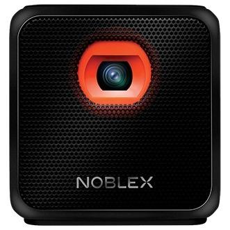

El proyector portatil con android incorporado

Noblex presentó Smart Qube, un proyector portátil que permite reproducir películas, series, mostrar presentaciones de negocios y hasta escuchar música con solo utilizar el control remoto. El distintivo más importante del proyector Smart Qube de Noblex es la posibilidad de proyectar aplicaciones. La compañía destacó entre ellas Netflix y YouTube. Es decir, se comportaría de manera similar a Chromecast, el accesorio de Google que permite enviar contenidos a cualquier TV con HDMI.